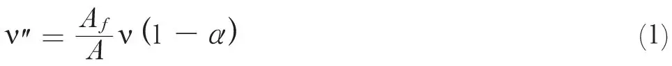
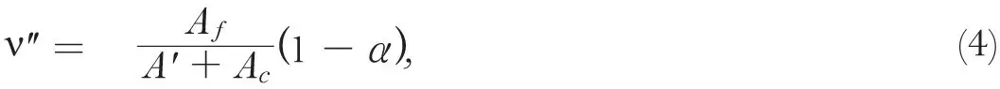

中文
中文F. Adler and H. von Halban, jun.
Editor’s Note
Because roughly 3.5 neutrons are typically released in a uranium fission event, physicists now understood that chain reactions were probably possible. There is thus a considerable danger, as Felix Adler and Hans von Halban here note, that a sample of uranium might explode. But they also suggest a means for controlling such reactions. Into a system of highly concentrated uranium one might insert materials known to absorb neutrons efficiently, such as cadmium. In so doing, the number of further fission events triggered by one such event could be tuned close to 1, so that the reaction would grow only slowly. This suggestion ultimately pointed the way to the “moderator rods” used to control reactions in modern nuclear reactors. 中文
IT has recently been shown that the number1 of neutrons liberated2 in the nuclear fission of a uranium nucleus is sufficiently high to make the realization of a self-perpetuating reaction chain seem possible. The danger that a system containing uranium in high concentration might explode, once the chain is started, is considerable. It is therefore useful to point out a mechanism which gives the possibility of controlling the development of such a chain. 中文
We form an expression which is characteristic for the behaviour of the chain:

Af being the product of the cross-section for nuclear fission for a thermal neutron of the uranium nucleus with the concentration of the uranium; Ai the product of the absorption cross-section for thermal neutrons of the nucleus of kind i multiplied with its concentration; A the sum of all Ai’s, which is to be taken over all kinds of nuclei present in the solution; ν is the average number of neutrons liberated in one fission, α the average probability for a neutron to diffuse out of the system before being absorbed. 中文
The energy liberated by the chain will be
E = NF,
(2)
F being the energy liberated in one fission and N the number of fissions produced by the chain. We have

The chain gives thus a quantity of energy, which is increasing rapidly with time, if ν″ is greater than 1. Let us consider the case of a chain which is due to fission produced by thermal neutrons; that is, a chain propagating itself in a system containing sufficient hydrogen for the slowing down of the neutrons. 中文
If the cross-sections for capture or fission of all nuclei present follow the 1/υ law, ν″ will not depend on the velocity of the neutrons and therefore not on the temperature of the system (since α will in practice be small and since it depends in the first place on the distance necessary for slowing down the neutron; the temperature has, of course, an effect, although it will be very small). 中文
Let us, however, introduce an absorbent, such as cadmium, the cross-section of which does not depend on the neutron energy in the thermal region. We will have, instead of (1),

where A′ is the sum of all Ai’s following the 1/υ law and Ac is a constant, the term due to the newly added absorbent. ν″ will now decrease with increasing temperature. At a temperature, which will be characteristic for the composition and the geometrical constants of the system, ν″ will become smaller than unity and the system will stabilize itself somewhere near this temperature; the equilibrium being determined by the fact that the amount of energy given out per unit of time by the system (in the form of heat and nuclear radiation) is equal to the energy produced by the system. Similar questions have been discussed by F. Perrin3. 中文
Added in proof: In the case of a chain propagating itself by thermal neutrons, the time necessary for the slowing down and for the absorption of a neutron, that is, its mean life, is of the order of 10−4 sec. If one makes ν″ as small as 1,007, it needs 100 times the mean life of a neutron or about 10−2 sec. to double the number of neutrons, and with that the energy liberated per unit of time. It is therefore possible to control the development of the chain by a periodical interaction of absorbers which break up the chains by entering the system. 中文
(143, 793; 1939)
F. Adler and H. von Halban, jun.: Laboratoire de Chimie Nucléaire, Collège de France, Paris.
References:
1. von Halban, jun., H., Joliot, F., and Kowarski, L., Nature, 143, 470 (1939).
2. von Halban, jun., H., Joliot, F., and Kowarski, L., Nature, 143, 680 (1939). Roberts, R., Meyer, R., and Wang, P., Phys. Rev., 55, 510 (1939). Haenny, C., and Rosenberg, A., C.R., 208, 898 (1939). Szilard and Zinn (private communication). Huber and Buldinger (private communication).
3. Perrin, F., C.R., in the Press.